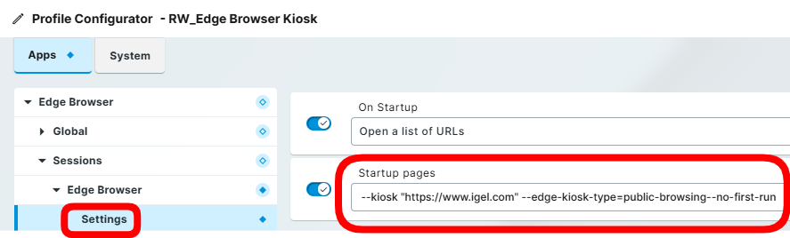
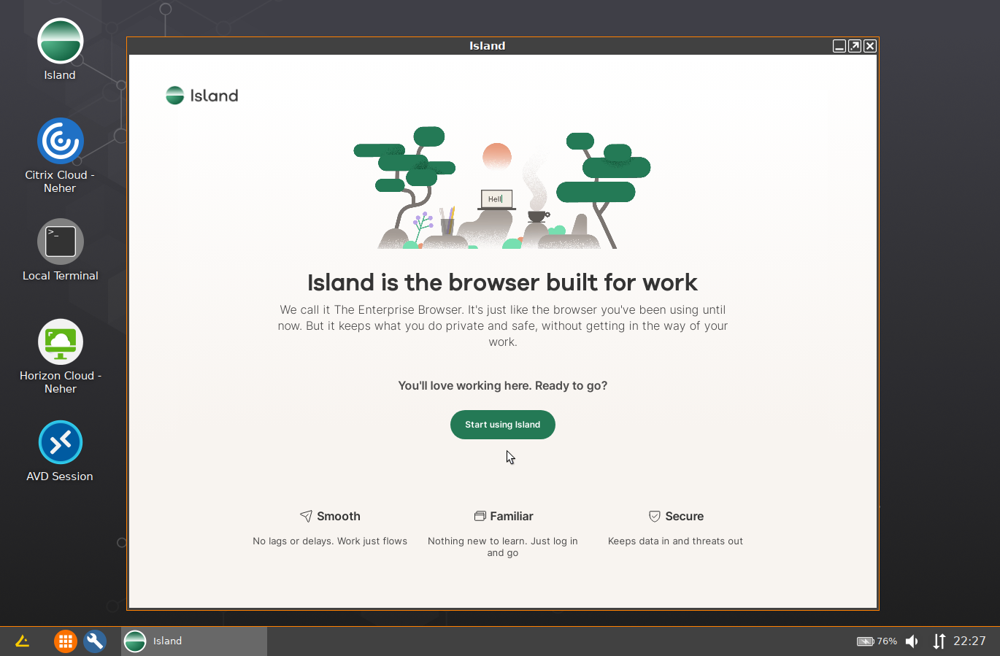

HOWTO Browsers
IGEL OS 11 includes Chromium and Firefox browsers.
- KB: Chromium Browser Global
- KB: Chromium Sessions
- KB Firefox Browser Global
- KB: Firefox Browser Session
IGEL OS 12 has the following browsers. Other browsers are planned.
- KB: Chromium Browser
- Firefox Browser
- Island Browser
- KB: Microsoft Edge Browser
- Palo Alto Networks - Prisma Access Browser
- IGEL built in browser:
1 | |
Q: How to set default browser in IGEL OS 12?
A: IGEL KB: How to Set the Default Browser in IGEL OS 12
Q: What are commands to see browsers on system and set default browser?
A: Here are some commands that can be used:
- List browsers on system:
1 | |
- Options for
get-browsers:
1 | |
- Check current default browser:
1 | |
- Set default (example: Firefox):
1 | |
- Open URL with the default browser
1 | |
Q: How to configure Edge Browser in Kiosk Mode
A: Apps -> Edge Browser > Sessions -> Settings -> Startup pages:
1 | |

Q: How to configure Firefox to open Citrix ICA file?
A In the Firefox profile / global settings / custom setup, create a policy;
1 2 | |
Q: How to configure Firefox to open Horizon
A In the Firefox profile / global settings / advanced / custom preferences.
- Mode: pref
- Custom preference: AutoLaunchProtocolsFromOrigins
- Type: String
- Value:
1 | |
Q: How to disable sign-in option in Microsoft Edge?
A: Set the following in profile Edge Browser > Global Settings > Custom Setup > Custom Policies
1 2 | |
Q: How to disable offering to save password in Microsoft Edge?
A: Set the following in profile Edge Browser > Global Settings > Custom Setup > Custom Policies
1 | |
Q: How to disable checking for updates for Microsoft Edge?
A: Set the following in profile Edge Browser > Global Settings > Custom Setup > Custom Policies
1 | |
Q: How to control audio / microphone for Microsoft Edge?
A: Set the following in profile Edge Browser > Global Settings > Custom Setup > Custom Policies
- For all sites:
1 | |
- Only for trusted sites:
1 2 | |
Q: How to open URL in Edge in full screen?
A: Here is an example:
1 | |
OS 12: Running Progressive Web Apps (PWA)
-
IGEL KB: Example: Microsoft Outlook as a Progressive Web App (PWA) on IGEL OS 12
-
IGEL KB: Example: Google Maps as a Progressive Web App (PWA) on IGEL OS 12
PWA URLs
| Name | Progressive Web App Url | Icon |
|---|---|---|
| Google Drive | https://drive.google.com/?lfhs=2 | |
| Google Mail | https://mail.google.com/mail/?usp=installed_webapp | LINK to icon |
| Google Maps | https://www.google.com/maps?force=tt&source=ttpwa | |
| Microsoft 365 Copilot | https://m365.cloud.microsoft | LINK to icon |
| Microsoft Copilot | https://copilot.cloud.microsoft/?fromcode=cmc&redirectid=95DE602277C6464DA06ED6A3396BCAC8&auth=2 | LINK to icon |
| Microsoft Excel | https://excel.cloud.microsoft | LINK to icon |
| Microsoft Outlook | https://outlook.cloud.microsoft | LINK to icon |
| Microsoft PowerPoint | https://powerpoint.cloud.microsoft | LINK to icon |
| Microsoft Teams | https://teams.cloud.microsoft | LINK to icon |
| Microsoft Word | https://word.cloud.microsoft | LINK to icon |
| Omnissa TestDrive | https://testdrive.vidmpreview.com/authcontrol/auth/request | LINK to icon |
| YouTube | https://www.youtube.com/?feature=ytca |
{kind=link}
{kind=link}
{kind=link}
{kind=link}
{kind=link}
{kind=link}
{kind=link}
{kind=link}
NOTE: After running a PWA for the first time, reboot device and the icon for the app will be updated. If issue with icon, then download icon and add to profile setting Progressive Web App Icon (optional). Use UMS files to download icons and save into /wfs.
IGEL OS with Chromium – Guide
List of Chromium Command Line Switches
Other Browsers
Custom Partitions (CP) can be created for the following browsers:
- Google Chrome
- Microsoft Edge
- Island
IGEL Community GitHub CP Builders for Browsers
Island Enterprise Browser

Citrix Enterprise Browser
Create Watcher Script to Automatically Run a Downloaded Program
-
Automatically running a downloaded program from browser is blocked
-
Create a watcher script to look for the program type to start
-
Create a custom application for this script and set it to auto start / run (System > System Customization > Custom Application)
NOTE: This method can be used to start Bomgar remote support session from the browser
1 2 3 4 5 6 7 8 9 10 11 12 13 14 15 16 17 18 19 20 21 22 23 24 25 26 | |